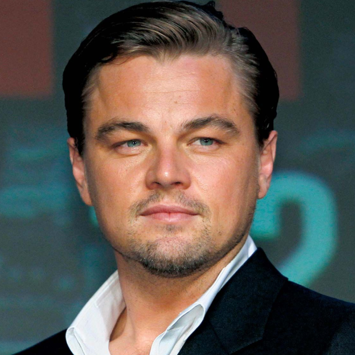

Леонардо Ди Каприо — американский актёр и продюсер, один из самых известных и влиятельных артистов современного Голливуда. Мировую славу ему принесла роль Джека в фильме «Титаник», после чего он снялся во множестве успешных картин, среди которых «Начало», «Волк с Уолл-стрит» и «Выживший». За роль в «Выжившем» Ди Каприо получил премию «Оскар». Он известен своей способностью глубоко вживаться в сложные образы, а также активной экологической деятельностью и поддержкой природоохранных инициатив.
